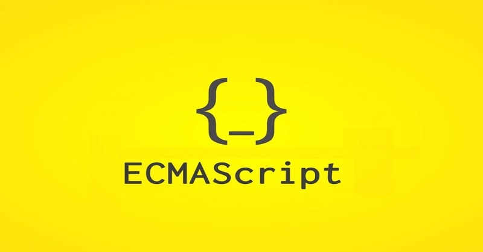

Introducción a JavaScript
JavaScript (JS) es un lenguaje de programación interpretado, usado ampliamente para crear interactividad en páginas web. Nació en 1995 y desde entonces ha evolucionado notablemente (ECMAScript, ES6, etc.).
Breve historia
1995 — Creación
Brendan Eich crea JavaScript en Netscape en tan solo 10 días.

1997 — Nace ECMAScript
Se publica el primer estándar ECMAScript (ES1) para unificar implementaciones.
2015 — ES6
Se introducen mejoras como let/const, arrow functions y módulos.

¿Para qué sirve?
Se usa para manipular el DOM, gestionar eventos, enviar/recibir datos (JSON), y, con Node.js, también en servidor.